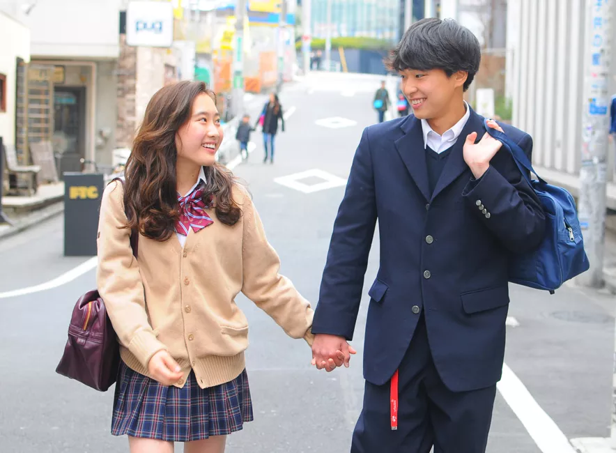
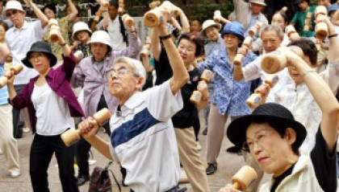

A cultura japonesa é antiga e está repleta de ritos e tradições para homenagear a família. Por ser uma ilha, o Japão foi capaz de minimizar a influência de outras culturas durante séculos. Isso permitiu que uma cultura e um patrimônio distintos se desenvolvessem para a bela Terra do Sol Nascente. Confira essas 5 curiosidades sobre o Japão e sua cultura, e conheça um pouco sobre toda a riqueza que esse país tem a oferecer
Na cultura do Japão, contato físico, em geral, não é corriqueiro como é no Brasil, por exemplo. Por causa disso, dar as mãos, no Japão, é um ato considerado íntimo e, quando feito em público (especialmente entre uma mulher e um homem), pode ser bastante ofensivo para pessoas mais conservadoras.
No momento de pagar uma compra no Japão, o dinheiro não é entregue diretamente nas mãos do atendente, mas em uma bandeja. Isso é feito para manter a higiene e, também, para evitar a possibilidade de haver contato físico.
No Japão, em geral, as tatuagens são malvistas, pois, tradicionalmente, elas eram muito utilizadas por pessoas conectadas a grupos criminosos ou por integrantes da máfia japonesa. Esse fato acabou por estigmatizar a tatuagem e, até hoje, japoneses mais conservadores veem pessoas tatuadas com maus olhos.
A educação é muito valorizada na cultura japonesa e, por isso, não é à toa que o Japão é um dos países com um dos maiores índices de alfabetização do mundo, com uma média de 99%.
A expectativa de vida do Japão é de, em média, 86 anos. Além disso, o Japão é um dos países com maior população idosa do mundo, graças à baixa taxa de natalidade, somada à excelente qualidade de vida disponível no país.
